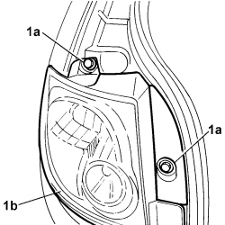
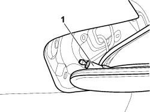
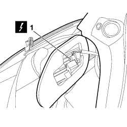

5540A56 EXTERIOR REAR LIGHT (ONE), LEFT OR RIGHT - R.R.
- Path
- Procedures > 55 ELECTRICAL EQUIPMENT > 5540 EXTERIOR LIGHTING > 5540A LIGHTING > 5540A56 EXTERIOR REAR LIGHT (ONE), LEFT OR RIGHT - R.R.
- Kind
- repair procedure (removal / refitting; the operation number is the code)
- Applies to
- all engines; all production periods
- Interactive page
- https://sloeber94.github.io/elrnDB-fCrm/en/#/194000727
Applies to: all engines; all production periods
 Removing
Removing
 Refitting
Refitting- Turn the ignition key to the OFF position.
- Disconnect the negative battery terminal.
Description | Connector | |
|---|---|---|
BATTERY |
1. Undo the two bolts (1a) fixing the outer rear light cluster (1b).

Applies to: all engines; all production periods
1. Release the light cluster from its housing releasing the two reference pins.

Applies to: all engines; all production periods
1. Disconnect the electrical connection.
Description | Connector | |
|---|---|---|
1 | LEFT REAR LIGHT CLUSTER |
Description | Connector | |
|---|---|---|
1 | RIGHT REAR LIGHT CLUSTER |

Applies to: all engines; all production periods
Refitting
Removing- Check the condition of the outer rear light cluster.
- Connect the electrical connection:
Description | Connector | |
|---|---|---|
LEFT REAR LIGHT CLUSTER |
Description | Connector | |
|---|---|---|
RIGHT REAR LIGHT CLUSTER |
- Position the outer rear light cluster in its housing attaching the two reference pins.
- Tighten the two bolts fixing the light cluster to the vehicle.
- Connect the negative battery terminal.
Description | Connector | |
|---|---|---|
BATTERY |